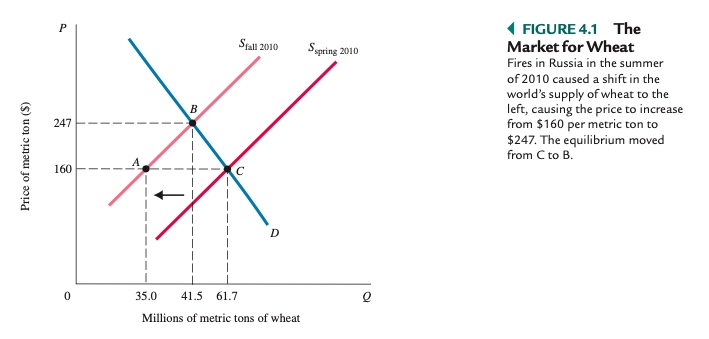
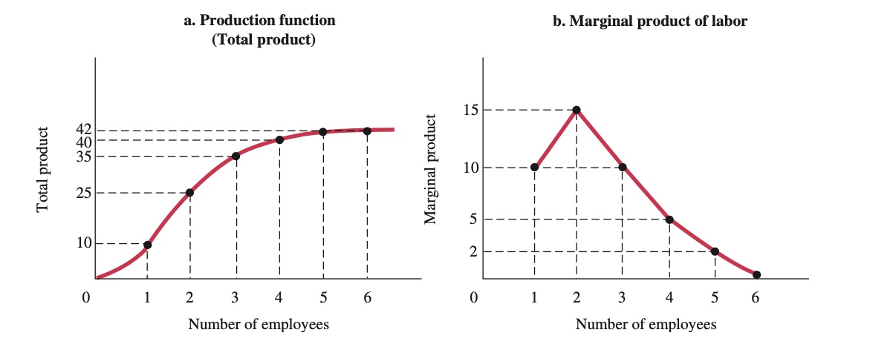

Volkswirtschaftslehre Grundlagen#
Überblick#
Allgemein#
Unterbereiche#
Mikroökonomik
Entscheidugngsprobleme auf individueller Basis
Koordintionsvorgänge
Fokus: Haushalte, Unternehmen
Makroökonomik
gesamtwirtschaftliche Vorgänge
Aggregat von Preisen, Indivuduen, Firmen zu Märtkten
Fokus: Preise, Beschäftigung, Inflation
Verhaltensökonomik
„neueres“ Fach der VWL
psychische Verhaltensmuster hinter Entscheidungen
…
Methoden#
Positive Ökonomik: „Wie die Welt ist“
normative Ökonomik: „Wie die Welt sein sollte“
Modell: formale Aussage einer Theorie über den Zusammenhang zwischen Variablen
Variable: Messung, die sich über Zeitraum verändern kann
Begriffe#
Kapital: Produkt, die für Produktion neuer Güter eingesetzt werden
Produktionsfaktor: Faktoren, die in produktionsprozess einfließen
Produktion: Verwandlung Input -> Output
Ressourcen: Inputs von Natur gegeben / von früheren Generationen geschaffen
Produkte: Objekte, die Nutzen generieren
Grundfragen#
Was wird produziert?
Wie wird es produziert?
Wer produziert es?
Mikroökonomik#
Vorteil#
absoluter Vorteil: Prduzent hat niedrigere Stückkosten als Konkurrent
relativer Vorteil: Produzent hat niedrigere Opportunitätskosten pro Einheit als Konkurrent
Ricardos Theorie des komparativen Vorteils: Spezialisierung und Handel verbessert Wohlfahrt aller Teilnehmer eines Marktes, selbst wenn einer den absoluten Vorteil hat
=> Handel ist förderlich, aufgrund starker positiver Wohlfahrtseffekte, kann aber zu kurzfristiger Umverteilung führen
Produktionsmöglichkeitenkurve#
Production Possibilities Frontier (PPF): zeigt alle Kombinationen von zwei Gütern, die von Individuen/ Unternehmen / Gesellschaft produziert oder konsumiert werden können
Eigenschaften:
negative Steigung
zeigt Opportunitätskosten
wieviel von einem aufgeben, um anderes zu bekommen
Punkte außerhalb der Linie = unerreichbar
punkte innerhalb der Linie = ineffizient
Wert der Steigerung = MRT
Marginal Rate of Transformation (MRT): lokale Steigerung der Kurve an einem Punkt
Märkte#
ökonomische Systeme#
Marktwirtschaft |
Planwirtschaft |
|---|---|
Individuen folgen Eigenzielen, preisgeleitet |
Zentralregierung setzt Einkommen, Output, Preise |
=> reale Systeme immer Mischform
der Markt#
Markt: Institution zum Kaufen / Verkaufen; basierend auf Preismechanismus
Einheiten:
Unternehmen: Organisation, die Ressourcen in Produkte umwandelt
Haushalt: Konsumenten von Produkten; Arbeitnehmer; Kapitalgeber
Arten:
Faktormarkt: Märkte, auf denen Ressourcen gehandelt werden
Arbeitsmarkt, Kapitalmarkt, Ölmarkt, …
Produktmarkt: Markt, auf dem Waren und Dienstleistungen getauscht werden
Nachfrage#
Gesetz der Nachfrage: Nachfrage nach Produktfällt bei steigendem Preis
Einflüsse auf Nachfrage:
Preis des Produktes
verfügbares Haushaltseinkommen
Preis der Alternativen
Erwartung Vermögensentwicklung
Darstellung mit Nachfragekurve (hier auch aggregierte Nachfrage):

immer blau!
negative Steigung
schneidet X wegen Grenznutzen
schneidet Y wegen Einkommensgrenze
Angebot#
Gesetz des Angebots: positive Beziehung Preis <–> Menge
Einflüsse:
Preis des Produktes im Markt
Preis verwandter Produkte
Herstellungskosten
Darstellung mit Angebitskurve
immer rot
positive Steigung
Marktgleichgewicht#
Zustand, in dem Angebot = Gleichgewicht
Überhangsnachfrage: Zustand, in dem nachgefragte Menge > Angebot übersteigt
Überhangsangebot: Zustand, in dem der angebotene Menge Nachfrage übersteigt
=> beides führt zu Rekalibrierung => neuem Preis

Preismechanismus: Prozess der Anpassung des Preises in freien Märkten
alternative Mechanismen der Verteilung:
Preisobergrenze: führt zu Überhangnachfrage
Schlangestehen: => verlorene Lebenszeit, Schwarzmarkt
Rationierung => Mangel, Korruption
Wohlfahrt#
Wohlfahrt: Nutzen aller Individuen in einem aggregierten Markt
Konsumentenrente |
Produzentenrente |
|---|---|
|
|
Differenz zwischen Höchstbetrag, den man bereit ist zu zahlen und Marktpreis |
Different zwischen Produktionskosten und Marktpreis einer Firma |
Beispiel: ich würde 5€ für Döner zahlen, er kostet aber nur 3 = 2€ Rente (Profit) für mich |
Döner kostet 3€, Produktion aber nur 2€ = 1€ Profit = Rente |

\(Gesamtwohlfahrt = Konsumentenrente + Produzentenrente\)

Wohlfahrtsverlust: bei fehlendem Marktgleichgewicht wie bei Preisgrenzen, Minimumpreisen, etc

Haushalte#
jeden Tag treffen Haushalte Entscheidungen aufgrund von Budgetbeschränkungen
Budgetbeschränkung: Grenzen, die den Entscheidungen eines Haushaltes gesetzt sind
Notation: \(P_X * X + P_Y * Y = I\)
\(P_X\) = Preis von Gut X
\(X\) = Gut X
\(I\) = Einkommen (Income)
Menge aller für Haushalt möglichen Güterkombinationen = Opportunitätsmenge
Auswirkungen einer Preissenkung:
Ausweitung der Opportunitätsmenge
andere Güter werden „relativ“ billiger

Nutzen#
Nutzen: erzeugte Zufriedenheit bei Konsumenten durch ein Produkt
es gilt das Gesetz des abnehmenden Grenznutzens
Grenznutzen: zusätzliche Zufriedenheit durch Konsum einer weiteren Einheit eines Produktes
Haushalte agieren nutzenmaximierend => beste Streuung der Ausgaben für optimale Kombination
Gesamtnutzen |
Grenznutzen |
|---|---|
|
|
Gesamtnutzen steigt immer weiter |
der Grenznutzen nimmt aber ab! |


Effekte einer Preisänderung#
ein Preisrückgang führt ceteribus paribus zu mehr Nutzen, da Haushalt „reicher“
Einkommenseffekt
außerdem wird das Produkt in Relation zu anderen billiger und somit verlagert sich mehr Konsum auf dieses Produkt
Substitutionseffekt
Anwendung auf den Arbeitsmarkt:
auf arbeitsmarkt Zielkonflikt für Haushalte: Freizeit vs. Arbeit
Opportunitätspreis der Freizeit = Lohnsatz
Was passiert bei Lohnerhöhung?
Substitutionseffekt => Freizeit wird „teurer“ => mehr Arbeit
Einkommenseffekt => Wir können uns mehr Freizeit leisten => weniger Arbeit
reeller Effekt abhängig von Individ. Präferenzen
Güterarten#
Güter lassen sich in 3 Arten einteilen anhand der Effekte, die auf sie wirken
Normales Gut: steigendes Einkommen -> mehr gekauft
Inferiores Gut: steigendes Einkommen -> weniger gekauft
Giffen Good: eigentlich inferior, aber wenn Einkommen sinkt -> mehr kaufen
Auswirkungen einer Preissenkung:
Gut |
Einkommenseffekt EE |
Substitutionseffekt SE |
Wirkrichtung |
Ergebnis |
|---|---|---|---|---|
Normale Güter |
mehr kaufen |
weniger kaufen |
\(SE + EE \\to\) |
kaufen mehr |
Inferiore Güter |
Mehr kaufen |
weniger kaufen |
\(SE \\to \\gets EE\) |
\(SE > EE\) = weniger |
Giffen Güter |
mehr kaufen |
deutlich weniger kaufen |
\(SE \\to \\gets EE\) |
\(SE >> EE\) = deutlich weniger |
Unternehmen#
Unternehmen: Organisation, die Ressourcen (Inputs) zu Produkten (Outputs) umwandelt
Ziel: maximale Gewinne:
bei perfektem Wettbewerb haben Unternehmen keinen Einfluss auf Preis / Nachfrage
kostenminimierendes und profitmaxierendes Verhalten
Zeithorizonte eines Unternehmens:
kurzfristig: feste Produktionsgröße (bspw. Anzahl Maschinen) + keine Neueuntritte in Markt
langfristig: keine festen Produktionsfaktoren + Neueintritte
Technologiewahl#
Unternehmen suchen optimale Produktionsmethode für Kostenminimierung
Arten der Technologie:
Kapitalintensiv: braucht viel Geld und wenig Arbeiter (Softwarefirmen)
arbeitsintensiv: viele Arbeiter und wenig Geld (Restaurants)
Problem aller Technologien: Gesetz des abnehmenden Ertrags:
Gesetz des abnehmenden Ertrags: zusätzliche Einheiten variablen Inputs auf festen Input => sinkende Grenzproduktivität
Bsp.: 2 Köche und 2 Öfen = produktiv; 2 Köche und 10 Öfen = unproduktiv
Grenzprodukt: (Marginal Product) zusätzlicher Output, der durch Erhöhung eines Inputs realisert werden kann

Durchschnittsprodukt = \(\\frac{Gesamtprodukt}{Anzahl \\ Einheiten}\)
Transaktionskosten#
Transaktionskosten: fallen an, wenn ein Geschäft abgeschlossen wird. je unübersichtlicher der Markt, desto höher die Kosten
ex-ante: vor Abschluss, bspw. Maklerkosten
ex-post: nach Abschluss, bspw. Transportkosten
Marktversagen/Externalitäten#
Externalitäten: Handlung einer Partei, die zu Kosten / Nutzen anderer Parte führt
Bspw. Fabrik verpestet Fluss von Fischern
Problem: Fluss ist ein Allmendegut
Lösungsansätze: Verhandlungen (Fischer / Fabrik); Umweltgesetze, Steuern
Arten von Gütern der Öffentlichkeit:
Probleme öffentlicher Güter: Trittbrettfahrer (warum zahlen, wenn du es mir nicht wegnehmen kannst?)
Makroökonomik#
befasst sich mit Determinanten des Volkseinkommens und aggregierten Preisen/ Verbrauch
Bestandteile:
Unternehmen
Haushalte
Staat
Rest der Welt
Der Staat#
politische Möglichkeiten eines Staates:
Finanzpolitik |
Geldpolitik |
|---|---|
Mittel der Regierung zur Anpassung der Ausgaben / Steuern |
Mittel der Zentralbank zur Steuerung der Geldmenge / Zinssätze |
Mittel: Verschulden + Investieren oder Sparen und Steuern senken |
Mittel: Festsetzung der Zinssätze, Kauf + Verkauf Staatsanleihen |
Volkseinkommen#
Messung mit BIP
Bruttoinlandsprodukt (BIP): gesamter Marktwert der Endprodukte / Dienstleistungen, die in einer Periode in einem Land produziert werden
ermittelt vom statistischen Bundesamt
keine Transaktion, Spenden, Schwarzarbeit,…
Darstelllung des Volkseinkommens über Zeit anhand des Konjunkturzyklus:
Arbeitslosigkeit#
arbeitslos: Person, 16 Jahre oder älter und auf der Suche nach Arbeit
Unterschied zwischen arbeitslos und nicht erwerbstätig! (Rentner haben keine Arbeit, suchen aber auch keine = nicht erwerbstätig)
Kategorien:
natürliche Arbeitslosigkeit
friktionsbedingt: zwischen zwei Jobs
strukturell: aufgrund der Wirtschaftsstruktur fehlende Jobs
konjunkturelle Arbeitslosigkeit: aufgrund der aktuellen Wirtschaftslage
Inflation#
Inflation: allgemeiner Anstieg des Preisniveaus über einen Zetraum, gemessen mit CPI/VPI
CPI = Consumer Price Index, Messung der Preise anhand eines repräsentativen Warenkorbs
Folgen:
milde Inflation (~2%) = gut, führt zu Ausgabenfreude der Konsumenten
starke Inflation: schadet, insbesondere Arbeitnehmern und hilft Schuldnern
Wirtschaftswachstum#
Geschichte:
Beginn um 1750 in England augrind industrieller Innovationen
erstes Land mit Wandel von Agrargesellschaft zu städtischer Industriegesellschaft
Insb. im 20Jhd extremes Auseinanderentwickeln der Staaten
„The Great Divide“
Voraussetzungen für Wachstum:
investierfreudiges Kapital
stabile Institutionen
Vorhandensein von Technologie
Quellen des Wachstums:
Arbeit: steigende Erwerbsrate + Bevölkerungswachstum
Kapital: steigende Ersparnisse + ausländische Investitionen
Qualität der Arbeit: bessere Bildung der Arbeitnehmer (universitär, etc)
Qualität des Kapitals: neue Technologien + Innovationen
Entwicklungsländer#
Probleme#
Kapitalflucht: Gled fließt außerhalb des Landes
Brain Drain: gebildete verlassen Land und gehen in reichere Länder
Korruption: behindert freies Marktgeschehen
fehlendes staatliches Gewaltmonopol:
keine Rechtsgrundlage
keine Durchsetzung von Verträgen
Strategien#
Importsubstitution |
Exportförderung |
|---|---|
Ersetzen der Importe durch heimische Produktion |
Steigerung der Exporte der Industrie |
Durch Subventionen des industriellen Sektors |
durch Wettbewerbsmaßnahmen wie Steuersenkung |
Armut#
relative Armut: Haushaltseinkommen weniger als 60% des mittleren Einkommens (abhängig von Land)
absolute Armut: Haushaltseinkommen weniger als 3.10$ pro Tag (Weltbank legt fest)
extreme Armut: Haushaltseinkommen weniger als $2 pro Tag (Weltbank legt fest)
aufgrund fehlender Startmöglichkeiten kann nie Wachstum indziert werden = Teufelskreis

Forschungstrends#
welche Forschungstrends gibts in der aktuellen Volkswirtschaftslehre?
Experimente#
natürliche Experimente: die „Natur“ entscheidet darüber, welche Gruppe man zugeteilt wird
bspw. dein Wohnort in einem oder anderen Bundesland und dann wird zwischen Bundesländern unterschieden
Randomisierte Kontrollstudie: zufallsauswahl der Gruppenzuteilung
=> Nobelpreis der letzten beiden Jahre
Lesematerial#
Mindestlohn - IFO:Link#
IFO-Institut: eher konservative monetaristische Ansichten aus München
hatte vor Einführung prognostiziert, dass der MIndestlohn 1. Million Arbeitsplätze kostet
komplett daneben mit Schätzung
Versucht mit Paper („verzweifelt“) Position zu erklären
Mindestlohn ist schlecht, weil:
hat Arbeitsplätze gekostet (wenn auch nicht so viele wie vorausgesagt)
zwang Arbeitnhemer im Niedriglohnbereich zu Arbeitszeitreduktion
das hat Jobverluste aufgefangen
er wird viel umgangen, deswegen ist nicht so viel passiert
Mindestlohn ersetzt nur Grundsicherung, führt nicht zu Einkommensteigerungen
WTF: Was ist das bitte für nen Argument, ist doch wünschenswert dass Leute nen guten Lohn statt Hartz IV bekommen (meine Meinung)!
Mindestlohn - DIW : Link#
DIW: eher progressives Institut aus Berlin
Mindestlohn ist gut, weil:
erhöhte Löhne von mehr als 5 Millionen Arbeitnehmern (15% der AN)
Einkommens und Lebensqualitätssteigerung
insbesondere Ostdeutschland hat massiv profitiert
Reduzierung von Ungleichheit
gute Konjunkturpolitik